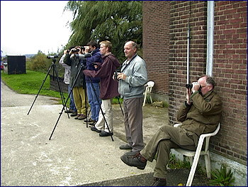

De Grote Trek
vrijdag 12 september 2003 | Natuur
Ah, hoe heerlijk ruiken die eerste herfstgeuren die momenteel de aarde en de bossen ontstijgen. Ik word er zowaar weemoedig van. Het feest van de zomer loopt op zijn laatste benen, de slingers worden opgeborgen, de muziek vergaat in de wind. Moedertje Natuur gaat gebogen onder het geweld van bloemen en kleuren waarmee ze een tijd geleden zo hard over onze landen raasde, en zij zoekt weldra, net zoals de mensen, een plekje bij de haard om haar verweerde knoken te warmen.
Maar ik niet! Want de herfst is een unieke periode om één van mijn meest geliefde buitenactiviteiten te beoefenen: vogels spotten! Vanaf de laatste dagen van augustus komt elk jaar opnieuw de Grote Trek van noord naar zuid op gang. Het komt er heel eenvoudig op neer dat vogels die noordelijker dan Vlaanderen broedden, hier opnieuw moeten overvliegen om hun winterverblijfplaats op te zoeken. Dat doen ze volgens eeuwenoude routes, nauwkeurig enkele natuurlijke lijnen volgend die naar het zuiden lopen, zoals de Atlantische kustlijn, maar ook grote rivieren of bergketens. Onder de meest interessantste trekplaatsen in Europa behoren Flasterbo in Zweden en Gibraltar in Spanje. Op deze punten verzamelen zich vanaf nu honderdduizenden vogels vooraleer ze zich aan de oversteek naar Europa, respectievelijk Afrika, wagen.
De najaarstrek zorgt elk jaar opnieuw voor verrassingen. Vooral in en rond de haven van Oostende worden geregeld uiterst zeldzame waarnemingen gemeld, zoals de uit Azië afkomstige Blauwstaart in 2001. De échte vogelfreaks — twichters in het jargon — communiceren met elkaar via een netwerk van beepers. Rond deze periode verkeren zij dan ook in een semi-autistische toestand, als waanzinnigen vastklampend aan hun apparaatje dat om de haverklap een cijfercode uitbraakt, die zij dan decoderen met een speciaal codeboekje. Vergeet het klassieke beeld van het in kakigroen geklede boswachtertype – pluim op de hoed – dat zich een weg door het struikgewas baant. De moderne vogelaar is uiterst mobiel, uitgerust met peperduur optisch materiaal en beschikt ten alle tijde over verschillende referentiewerken, zowel op papier als op cdrom, cd of internet.
Vogelspotten tijdens trekperiodes vergt wel een ietwat andere aanpak. Er zijn twee verschillende technieken. Je kunt je bijvoorbeeld op één van de vele zogeheten telposten opstellen. Dat zijn meestal strategisch interessante, hooggelegen kouters in het binnenland. Je stelt een telescoop op en legt een notaboekje klaar. En dan, dan luister je. Want met het oor kan je dezer dagen meer zien dan met het oog. Kleine zangvogels trekken vaak op aanzienlijke hoogte en zouden vaak onopgemerkt voorbijvliegen, ware het niet dat ze om de paar seconden een trekroepje laten horen. Deze trekroepjes zijn uniek voor elke soort en zijn dan ook hét determinatiekenmerk bij uitstek, want zelfs met een goede verrekijker of telescoop zien die beesten er tegen een knalblauwe hemel allemaal hetzelfde uit.
De andere techniek is minder romantisch. Met de auto schuim je een dag lang alle mogelijke toefjes groen aan onze Vlaamse kust af met verrekijker en telescoop. Eén armzalige struik tussen twee roestende scheepswrakken is al voldoende voor een grootse ontdekking. Trekkers, en dan vooral de kleine vogeltjes, moeten geregeld een pitstop inlassen om op krachten te komen. Vele trekken zelfs uitsluitend ‘s nachts, en landen in de vroege ochtend ergens op hun route om de dag ter plaatse door te brengen. Erg kieskeurig zijn ze niet voor een dagverblijfplaats, vandaar het succes van de geïsoleerde bosjes in de Oostendse haven.
Ik zou nog kilobytes lang kunnen vertellen over deze interessante studie, maar ik zal afsluiten met een handvol interessante links voor zij die meer willen weten.
De Vogelwerkgroep Zuid-West Vlaanderen heeft een techniek ontwikkeld om, op basis van weersvoorspellingen en berichten van verschillende belangrijke telposten in Europa, elke dag een voorspellingscode te berekenen. Bij code 0 blijf je de hele dag in bed liggen, bij code 10 sta je op om 4.30u, laat je je ziek melden op het werk en ga je de hele dag tellen. Je kan je abonneren op deze voorspellingsdienst door een mailtje te sturen naar Yann Feryn. Wil je weten wat er de komende dagen op ons afkomt, bekijk dan de dagelijks bijgewerkte telgegevens van Falsterbo. Schrik niet van de cijfertjes; Falsterbo is een grote naam onder vogelliefhebbers.
Maar het allerbelangrijkste blijft natuurlijk een goede kennis van de vogels vooraleer je je aan de najaarstrek waagt. Kennis van trekgeluiden is een absolute must. Ikzelf heb intussen de inhoud van twee cd’s biepjes en fluitjes gememoriseerd, maar het Internet brengt je ook al een flink eind op weg. De mensen van Telpost Parnassia hebben een overzichtje opgesteld met de meest voorkomende trekgeluidjes in de Lage Landen. Nog handiger was misschien mijn persoonlijk overzicht tijdens de trek vorig jaar, maar wegens copyright-redenen leek het me beter om de geluidjes er maar weer van te halen…
Een ander extreem handig hulpmiddel om je voor te bereiden op de najaarstrek is een beknopt document van de Duitse meneer W. Gatter uit 1976, Feldkennzeichen ziehender Passeres, waarin de vliegbeelden van enkele zangvogels worden beschreven. Eveneens onmisbaar is deze overzichtstabel van de doortrekperiodes van de Europese trekvogels.
Oh ja, als je één vogelboek koopt, koop dan de ANWB Vogelgids van Europa. Er bestaat geen betere. Een ronduit schitterend werk van een aantal extreem getalenteerde tekenaars en biologen. Wil je een telescoop, neem dan een kijkje naar de Leica APO-Televid 77.

Wouter op 16 september 2003
Klinkt boeiend, maar vergeet vooral niet dat gewoon met uw snuit vooruit van een najaarszonnetje genieten ook geestig kan zijn!